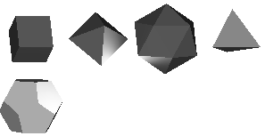
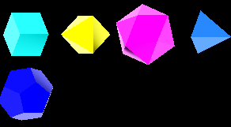
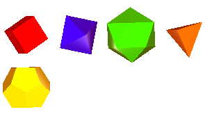
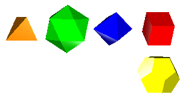
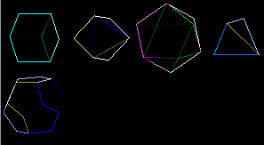
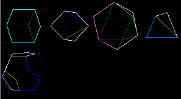
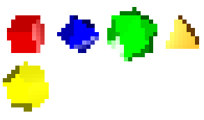
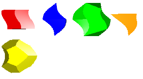
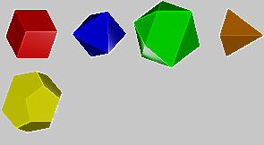

Introduction
This page describes what graphics filters are and how they work in my public domain HTML 3D Library. It also describes several examples of graphics filters.
Download the latest version of the library at the HTML 3D Library's Releases page.
Contents
Introduction
Contents
Graphics Filters
Writing Graphics Filters
Using Graphics Filters
Examples
Grayscale
Invert
Red Tint
Mirror Filter
Matrix Filter
Pixelate Filter
Wave Filter
Waterpaint Filter
Other Pages
Graphics Filters
In the HTML 3D Library, graphics filters are functions used to modify the appearance of the screen after each frame. They are implemented in a language called GLSL, or GL Shading Language. GLSL programs are called "shaders", and they are compiled into code that runs on a GPU, or graphics processing unit.
Graphics filters are considered "fragment shaders", or shaders that process one pixel at a time. GPUs can run shaders very fast because fragment shaders can process each pixel in parallel, without affecting the other pixels, and GPUs are often much better designed for parallel processing than CPUs.
For graphics filters to work, the 3D scene must be rendered to an off-screen buffer called a frame buffer. The frame buffer acts like a 3D texture which will be rendered back to the screen with the help of the graphics filter's shader program.
Writing Graphics Filters
In the HTML 3D Library, use the makeEffect method of the H3DU.ShaderProgram class to create
graphics filters:
- The
H3DU.ShaderProgramclass holds data on shader programs. Each shader program consists of a vertex shader and a fragment shader. Graphics filters are essentially part of a fragment shader and thus process pixels. (Vertex shaders, which process vertices of triangles, lines, and points, are not discussed on this page.) - The
makeEffectmethod creates a shader program and compiles it, using the graphics filter as part of the program's fragment shader. Since shader programs must also have a vertex shader, the method also adds a very basic vertex shader for the graphics filter.
The following is an example of a graphics filter.
return H3DU.ShaderProgram.makeEffect(null,[
"vec4 textureEffect(sampler2D sampler, vec2 uvCoord, vec2 textureSize){",
// Read the current color from the sampler texture
" vec4 color=texture2D(sampler,uvCoord);",
// Convert the color to a shade of gray. It gets
// the current color's red, green, and blue components,
// adds them, and divides by 3. Thus, the gray color
// will be an average of the red/green/blue components.
" float gray=(color.r+color.g+color.b)/3.0;",
// Return the gray color (using the color's original alpha)
" return vec4(gray,gray,gray,color.a);",
"}"].join("\n"));Each graphics filter must have a GLSL function called textureEffect(), like in the example above.
The textureEffect function takes these parameters:
sampler2D sampler: Points to a texture representing a screenshot of the current frame. To read from the texture, use thetexture2Dfunction, as shown in the example above.vec2 uvCoord: Texture coordinates of the current pixel.uvCoord.xranges from 0 on the left side to 1 on the right side.uvCoord.yranges from 0 on the bottom side to 1 on the top side. (Note that texture coordinates start from the bottom-left corner, not the top left, that is, textures are "bottom up", not "top down").vec2 textureSize: Size of the screenshot, pointed to bysampler, in pixels.textureSize.xis the width, andtextureSize.yis the height.
The textureEffect function returns a vec4 (4-element vector) giving the color that the current pixel should
be. The example above reads the current pixel's color, turns it to a shade of gray, and returns a new color
with that shade of gray. Thus, the filter will convert the screen to grayscale tones.
The shader can also define custom parameters called "uniforms". They are declared by using a line like
uniform [type] [name]; at the top of the shader. Example: uniform float time; Uniforms, once declared,
can be used in the textureEffect function.
A detailed treatment of GLSL is outside the scope of this page. More information about GLSL can be found by searching the Web; note that there are many versions of GLSL and the one used in HTML applications is relatively basic nowadays. Also see below for more examples of graphics filters.
Using Graphics Filters
After a filter is created, it's very easy to use.
TODO: Update this section to reflect major overhaul in use of graphics filters.
It's simply set with the useFilter method of Scene3D. After
a filter is set, here's how it works:
- When the
useFiltermethod is called to set a new graphics filter, the HTML 3D Library creates a frame buffer. A frame buffer consists of a texture with the same size as the 3D canvas and a renderbuffer to use as the depth buffer. - When the
render()method is called each frame:- The library ensures that the frame buffer is the same size as the 3D canvas.
- The 3D library switches drawing to use the frame buffer rather than the 3D canvas, then switches the shader to the usual shaders for drawing the 3D scene.
- The current frame is rendered onto the frame buffer. The frame buffer's texture will now contain a "snapshot" of the frame that can now be modified by graphics filters.
- The 3D library switches drawing back to the 3D canvas, then switches the shader to the graphics filter's shaders.
- A rectangle taking up the entire 3D canvas is drawn. This is to allow each pixel of the texture to
be passed to the graphics filter, and the filter's
textureEffectmethod to be called for each pixel. Any custom parameters, or "uniforms", given to the graphics filter will be set before drawing. The graphics filter can either use the current pixel's color or change it for each pixel. As a result, a "filtered" version of the current frame will be drawn.
Examples
- squares.html - Demonstrates graphics filters.
The demo squares.html includes a number of graphics filters implemented as shaders.
Here are more details on some of the filters it includes.
Grayscale

The grayscale filter, which converts the screen to black and white, was already given above.
Invert

The invert filter is built-in to the HTML 3D Library. It inverts the colors of the screen so the effect looks like a film negative.
This filter is implemented in the method ShaderProgram.getInvertEffect():
ShaderProgram.getInvertEffect=function(){
return ShaderProgram.makeEffect(context,
[
"vec4 textureEffect(sampler2D sampler, vec2 uvCoord, vec2 textureSize){",
" vec4 color=texture2D(sampler,uvCoord);",
" vec4 ret; ret.xyz=vec3(1.0,1.0,1.0)-color.xyz; ret.w=color.w; return ret;",
"}"].join("\n"));
}Red Tint

The red tint filter adds a hint of red to the image.
function makeRedTint(){
return ShaderProgram.makeEffect(context,[
"vec4 textureEffect(sampler2D sampler, vec2 uvCoord, vec2 textureSize){",
" vec4 color=texture2D(sampler,uvCoord);",
" return vec4(color.r+0.3,color.g,color.b,color.a);",
"}"].join("\n"));
}Mirror Filter

This filter does a horizontal flip of its pixels. Note that the filter, given below, reads not from the current pixel, but rather the pixel from the opposite side to the current pixel (it takes 1 minus the current X coordinate).
function makeMirror(){
return ShaderProgram.makeEffect(context,[
"vec4 textureEffect(sampler2D sampler, vec2 uvCoord, vec2 textureSize){",
" vec4 color=texture2D(sampler,vec2(1.0-uvCoord.x,uvCoord.y));",
" return color;",
"}"].join("\n"));
}With a simple change, this filter can be modified to do a vertical flip (1.0-uvCoord.y) or even both flips.
Matrix Filter
 

This filter enables a family of image processing filters, such as blurring, sharpening, edge detection, and embossing, that process each pixel and its neighbors. This filter takes a 3x3 matrix called a convolution kernel, which gives the contribution of each pixel's color to the final color. All the numbers in the matrix usually add up to 1.
Note that the uniform given below is a mat3, meaning a 3x3 matrix.
An example of a convolution kernel:
[ 0, 1/8, 0,
1/8, 1/2, 1/8,
0, 1/8, 0 ]This filter means that the destination pixel will have 1/2 of the original pixel's color, and 1/8 of the colors of its 4 adjacent pixels. Note that this example adds up to 1.
This filter is implemented in the function makeKernelMatrix in the demo. It is used for
the "blur" and "edge detect" effects. The filter shows how it's possible for filters to read neighboring
pixels, not just the current pixel, when implementing their effect.
Pixelate Filter

This filter pixelates the screen, in effect, by scaling it down and then scaling it up.
This filter takes a uniform named coarseness, which indicates how many normal pixels
each "pixelated" pixel takes up.
function makePixelate(){
return ShaderProgram.makeEffect(null,[
"uniform float coarseness;", // coarseness in pixels; 1 means normal
"vec4 textureEffect(sampler2D sampler, vec2 uvCoord, vec2 textureSize){",
" float g=max(coarseness,1.0);",
" float gridSizeX=textureSize.x/g;",
" float gridSizeY=textureSize.y/g;",
" float uv0=floor(uvCoord.x*gridSizeX)/gridSizeX;",
" float uv1=floor(uvCoord.y*gridSizeY)/gridSizeY;",
" vec4 c=texture2D(sampler,vec2(uv0,uv1));",
" return c;",
"}"].join("\n"));}
The demo changes the "coarseness" parameter with time to animate the pixelation effect.
Wave Filter

This filter shifts the pixels in each row horizontally to cause the screen to undulate
vertically. This filter takes a uniform named time, which indicates the animation
frame for the undulation effect.
This filter is implemented in the function makeWave in the demo.
Waterpaint Filter

This is a watercoloring effect based on a public domain shader by someone named "Themaister".
This filter is implemented in the function makeWaterpaint in the demo.
Other Pages
The following pages of mine on CodeProject also discuss this library: